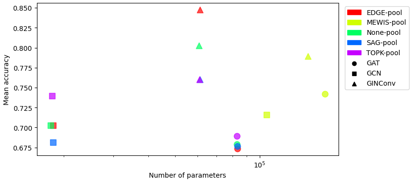
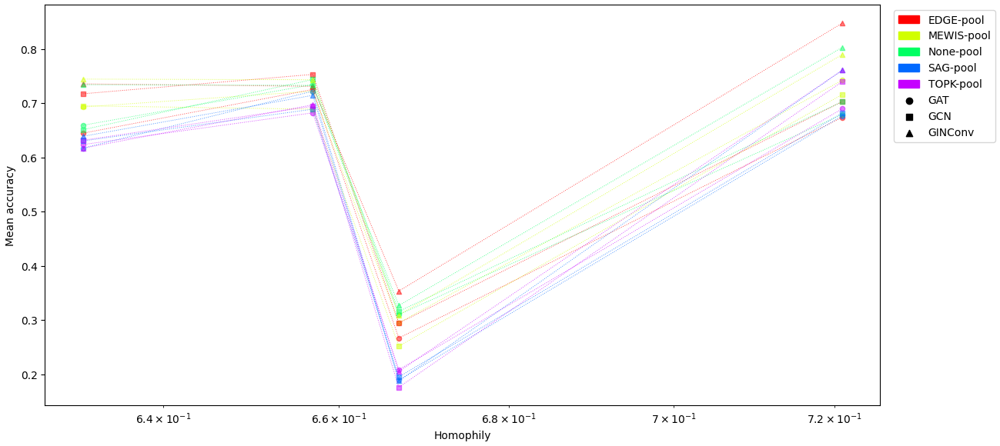

Empirical results
In this page, we will present the empirical results of our study on graph neural networks for molecular property prediction. We will first describe the datasets used in our experiments, followed by a comparison of mean vs max readout, an analysis of test accuracy vs number of parameters and train time, and an examination of test accuracy vs homophily. We will then present the results of our experiments with various pooling methods and architectures, and discuss the best architecture per pooling and the best pooling per architecture.
Our Datasets
We used four datasets for our experiments: MUTAG, PROTEINS, ENZYMES, and NCI1. The table below summarizes the key characteristics of these datasets.
| MUTAG | PROTEINS | ENZYMES | NCI1 | |
|---|---|---|---|---|
| Number of graphs | 188 | 1113 | 600 | 4110 |
| Number of classes | 2 | 2 | 6 | 2 |
| Number of features | 7 | 3 | 3 | 37 |
| Homophily | 0.721 | 0.657 | 0.667 | 0.631 |
Some examples of graphs from the MUTAG dataset are shown below.
Some graphs from MUTAG dataset (Source: bui2022ingrex)
Mean vs Max Readout
We compared the performance of mean and max readout functions for GNNs using Wilcoxon tests. The table below shows the p-value, mean difference, and best architecture for each dataset.
| p-value | Mean difference | Best architecture | |
|---|---|---|---|
| MUTAG | 0.258 | -0.008 | GINConv_EDGE_max |
| PROTEINS | 0.33 | 0.009 | GCN_EDGE_max |
| ENZYMES | 0.207 | -0.01 | GINConv_EDGE_mean |
Since the p-values are greater than 0.05, we conclude that the results are equivalent between mean and max readout. Therefore, we decided to use only the global max pooling in our experiments.
Test Accuracy vs Number of Parameters on MUTAG
The plot below shows the test accuracy vs. the number of parameters for various GNN architectures on the MUTAG dataset.

Test Accuracy vs Train Time on MUTAG
The plot below shows the test accuracy vs. train time for various GNN architectures on the MUTAG dataset.

Test Accuracy vs Homophily
The plot below shows the test accuracy vs. homophily for various GNN architectures on the four datasets.

Results by Pooling
The table below shows the results of our experiments with various pooling methods for GNNs.
| ENZYMES | MUTAG | NCI1 | PROTEINS | Train time | ||
|---|---|---|---|---|---|---|
| EDGE | GCN | 0.294 ± 0.026 | 0.703 ± 0.081 | 0.717 ± 0.015 | 0.753 ± 0.024 | 1327 |
| GIN | 0.353 ± 0.039 | 0.847 ± 0.063 | 0.735 ± 0.010 | 0.731 ± 0.017 | 1156 | |
| MEWIS | GIN | 0.309 ± 0.055 | 0.789 ± 0.077 | 0.744 ± 0.006 | 0.743 ± 0.016 | 4365 |
| None | GCN | 0.316 ± 0.044 | 0.703 ± 0.065 | 0.651 ± 0.015 | 0.743 ± 0.029 | 40 |
| GIN | 0.327 ± 0.042 | 0.803 ± 0.068 | 0.734 ± 0.018 | 0.733 ± 0.028 | 59 | |
| SAG | GAT | 0.189 ± 0.025 | 0.676 ± 0.062 | 0.617 ± 0.024 | 0.722 ± 0.050 | 112 |
| GCN | 0.195 ± 0.033 | 0.682 ± 0.073 | 0.630 ± 0.021 | 0.689 ± 0.041 | 53 | |
| GIN | 0.188 ± 0.040 | 0.761 ± 0.081 | 0.639 ± 0.036 | 0.714 ± 0.039 | 59 | |
| TOPK | GAT | 0.208 ± 0.054 | 0.689 ± 0.093 | 0.623 ± 0.045 | 0.682 ± 0.033 | 110 |
| GCN | 0.176 ± 0.035 | 0.739 ± 0.075 | 0.631 ± 0.034 | 0.694 ± 0.032 | 55 | |
| GIN | 0.205 ± 0.056 | 0.761 ± 0.079 | 0.617 ± 0.033 | 0.697 ± 0.027 | 56 |
Best architecture per pooling:
| Dataset | ENZYMES | MUTAG | NCI1 | PROTEINS |
|---|---|---|---|---|
| EDGE | GIN | GIN | GIN | GCN |
| MEWIS | GIN | GIN | GIN | GIN |
| None | GIN | GIN | GIN | GCN |
| SAG | GCN | GIN | GIN | GAT |
| TOPK | GAT | GIN | GCN | GIN |
Results by Architecture
The table below shows the results of our experiments with various GNN architectures.
| ENZYMES | MUTAG | NCI1 | PROTEINS | Total Time | ||
|---|---|---|---|---|---|---|
| GAT | MEWIS | \(0.295 \pm0.040\) | \(0.742 \pm0.086\) | \(0.693 \pm0.008\) | \(0.722 \pm0.022\) | 3225 |
| None | \(0.310 \pm0.053\) | \(0.679 \pm0.087\) | \(0.659 \pm0.023\) | \(0.734 \pm0.027\) | 90 | |
| GCN | EDGE | \(0.294 \pm0.026\) | \(0.703 \pm0.081\) | \(0.717 \pm0.015\) | \(0.753 \pm0.024\) | 1327 |
| None | \(0.316 \pm0.044\) | \(0.703 \pm0.065\) | \(0.651 \pm0.015\) | \(0.743 \pm0.029\) | 40 | |
| TOPK | \(0.176 \pm0.035\) | \(0.739 \pm0.075\) | \(0.631 \pm0.034\) | \(0.694 \pm0.032\) | 55 | |
| GIN | EDGE | \(0.353 \pm0.039\) | \(0.847 \pm0.063\) | \(0.735 \pm0.010\) | \(0.731 \pm0.017\) | 1156 |
| MEWIS | \(0.309 \pm0.055\) | \(0.789 \pm0.077\) | \(0.744 \pm0.006\) | \(0.743 \pm0.016\) | 4365 |
The best pooling method for each architecture is shown in the table below.
| Dataset | ENZYMES | MUTAG | NCI1 | PROTEINS |
|---|---|---|---|---|
| GAT | None | MEWIS | MEWIS | None |
| GCN | None | TOPK | EDGE | EDGE |
| GIN | EDGE | EDGE | MEWIS | MEWIS |